AnyPortrait > マニュアル > Hierarchy UI
Hierarchy UI
1.4.0
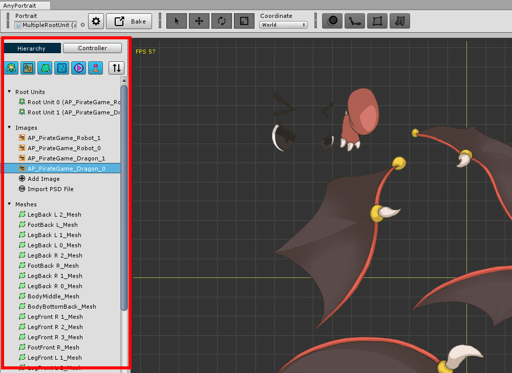
エディタの左側には、「Hierarchy UI」があります。
Hierarchy UIで作業しているPortraitに属するすべてのオブジェクトを見ることができます。
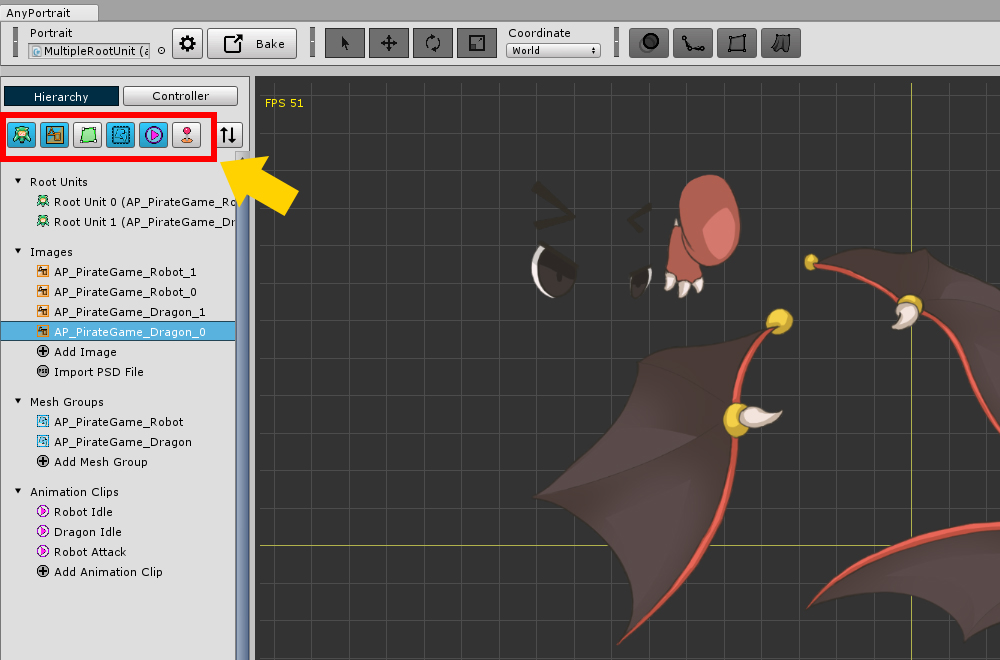
Hierarchy UIの上部には、「フィルタボタン」があります。
オブジェクトがあまりにも多くの場合、特定の種類のオブジェクトを非表示にすることが可能です。
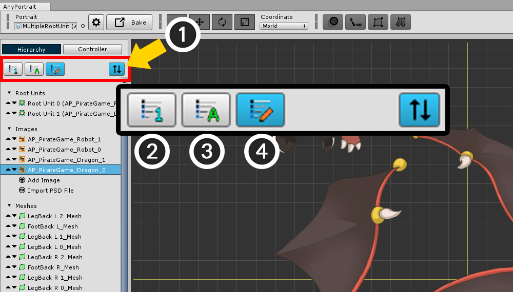
Hierarchy UIのオブジェクトの出力順序を変更することができます。
(1) 「ソートモード」ボタンをタップします。
ソートモードがオンになるフィルタのボタンが消えて並べ替えボタンが表示されます。
(2) 「作成順」でソートされます。
(3) 「名前順」でソートされます。
(4) 「カスタム方式」でソートされます。
「カスタム方式」でソートした場合、デフォルト値は 「作成順」と同じです。
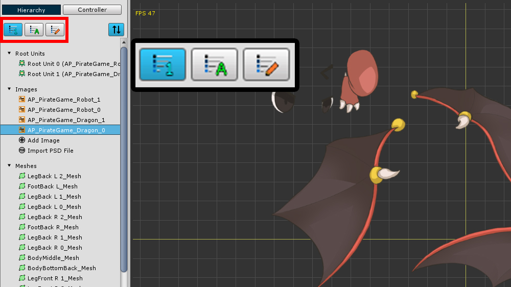
「作成順」でソートした状態です。

「名前順」にソートしました。
この方式は、英文、数字の名前である場合は、ソートがよくなります。
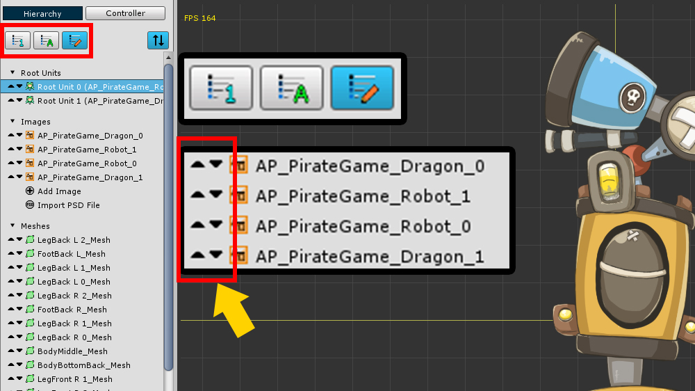
「カスタム方式」でソートしました。
基本的には「作成順」と同じですが、ユーザーがリストの左側に登場するボタンを押して順序を変更することができます。
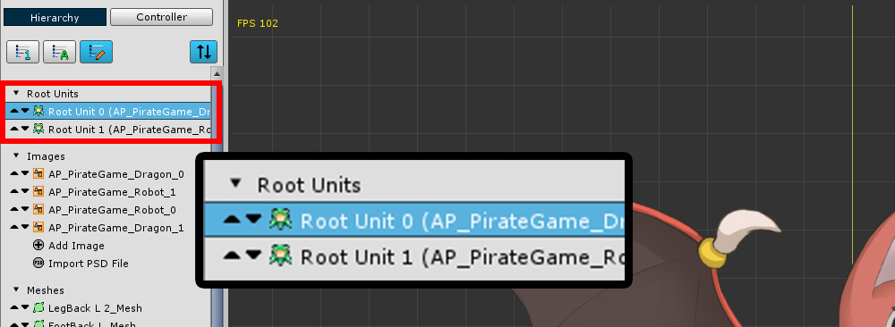
「カスタム方式」は、単に順序を変更する機能だけでなく、ルートユニット（Root Unit）の順序を変える機能も持っています。
ルートユニットの順序を変更すると、実際にルートユニットのインデックスが変わります。
右クリックメニュー
1.3.2
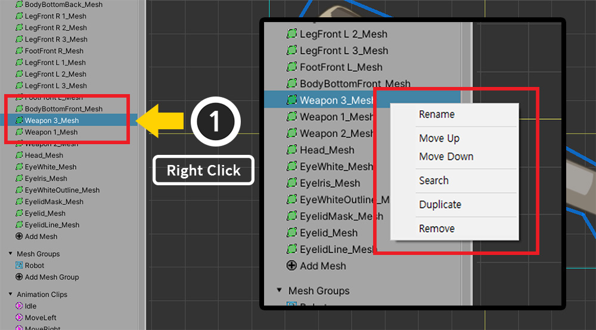
「Hierarchy UI」で 右クリック をして補助メニューを開くことができます。
オブジェクトのプロパティのUIでのいくつかの機能を高速に実行することができます。
（クリックしたオブジェクトの種類に応じてメニューの内容が異なります。）
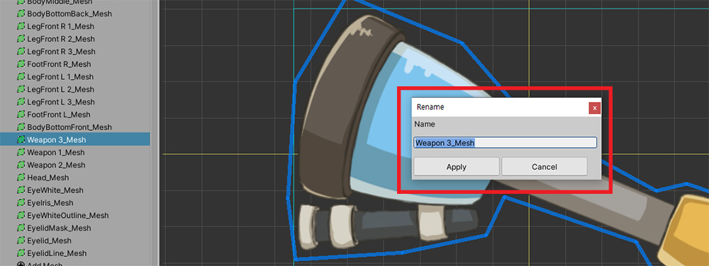
「Rename」項目を選択すると、そのオブジェクトの名前を変更することができます。
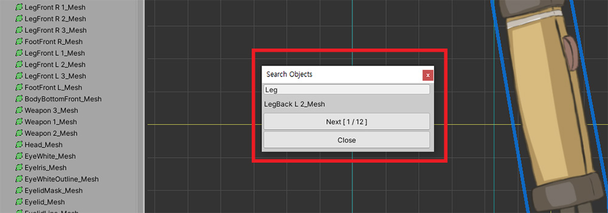
「Search」の項目を選択すると、名前でオブジェクトを検索することができます。
キーワードを入力して、 Enterキー を押すと、オブジェクトが検索されます。
「Nextボタン」を押して検出されたオブジェクトを順次選択することができます。
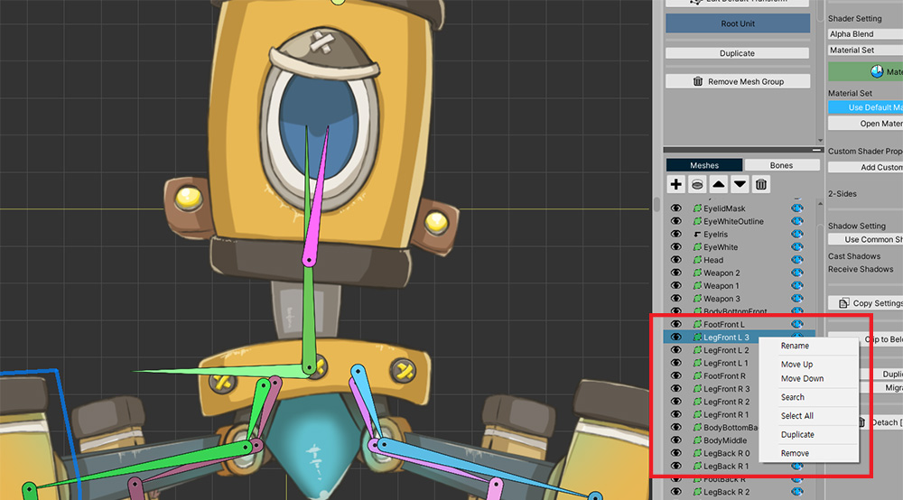
メッシュグループの「Hierarchy UI」も同じメニューを呼び出すことができます。
複数のオブジェクトを削除
1.3.4
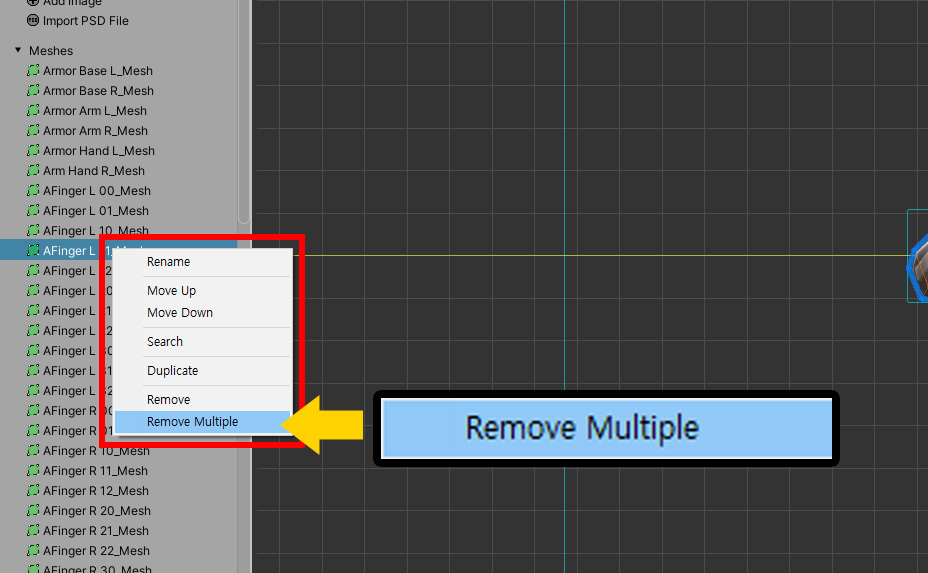
右クリックメニューに「Remove Multiple」メニューが追加されました。
このメニューを使用して、複数のオブジェクトを一度に削除することが可能です。
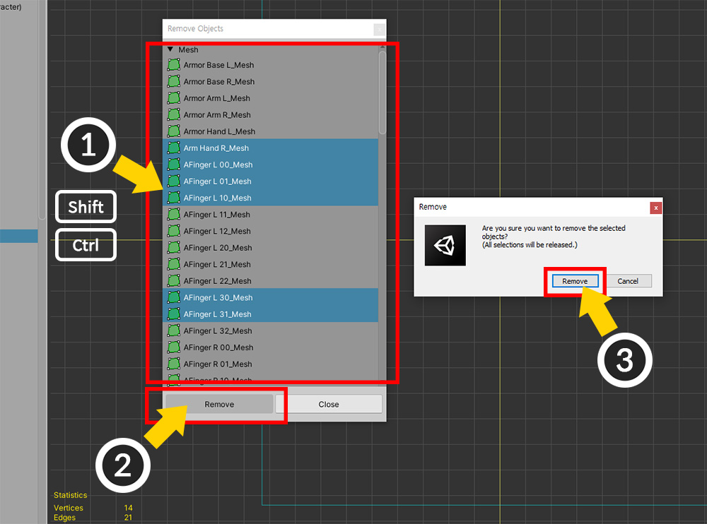
「Remove Multiple」メニューを選択すると、上記のようなダイアログが表示されます。
(1) 削除したい項目を選択します。 Shift キー、 Ctrl キーを押して複数選択することができます。
(2) 「Removeボタン」を押します。
(3) 警告メッセージが表示されます。よく選択してして、「Removeボタン」を押します。

このダイアログは、右クリックをしていた項目の種類に応じてリストに表示される項目が変わります。
画像で右クリックをしてダイアログを開いた場合、上記のようイメージがリストに表示されます。
（ルートユニット（Root Unit）は表示されません。）
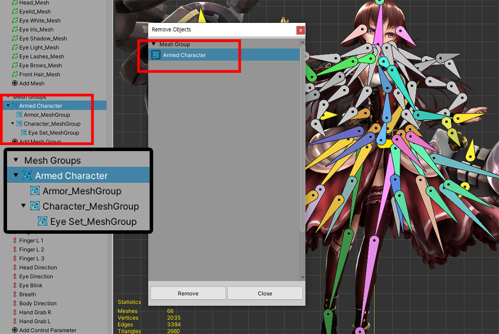
ただし、メッシュグループを削除しようとするとき、他のメッシュグループに属している子メッシュグループは表示されません。
メッシュグループのメッシュ、子メッシュグループを変更する
1.4.0
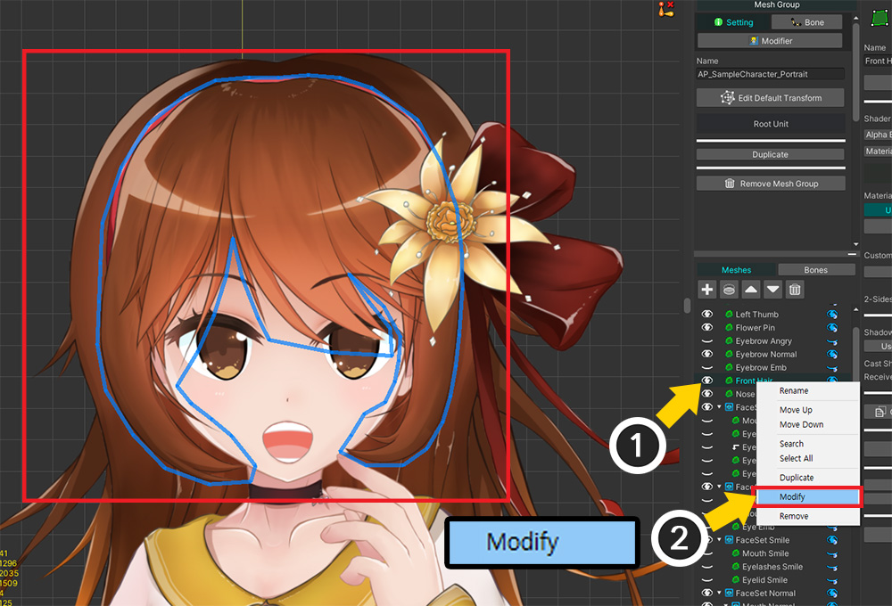
メッシュグループのメッシュまたは子メッシュグループを変更する画面にすばやく切り替えるメニューが右クリックメニューに追加されました。
(1) メッシュグループのHierarchyで変更したいターゲット（メッシュまたは子メッシュグループ）を マウス右クリック して補助メニューを開きます。
(2) 「Modify」項目を選択します。
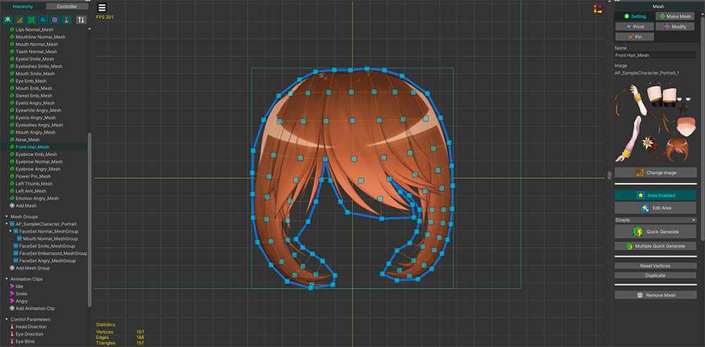
そのオブジェクトの編集画面に直接切り替えられるのがわかります。